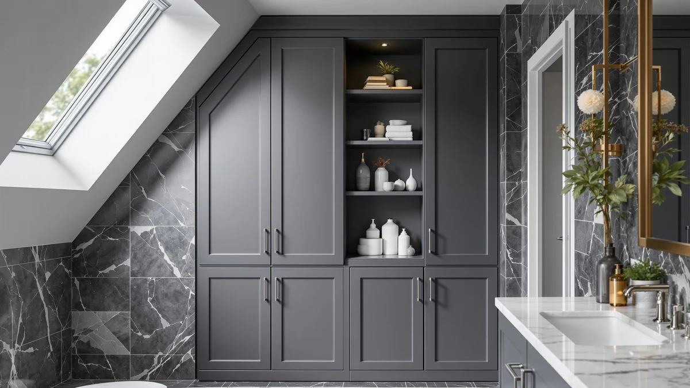

Best Bathroom Diffuser (2026)
Prices and picks verified as of August 2026. Independent, reader-supported reviews.


Quick Answer
If you need more bathroom storage without giving up floor space, the Kitsure Over Toilet Storage Rack is our top pick. Its slim three-tier frame straddles a standard toilet tank and adds real shelf space for under $30.
Our pick: Kitsure Over Toilet Storage Rack — $29.99 Check Price on Amazon
Bottom line: our top pick is the Kitsure Over Toilet Storage Rack - Metal Over Toilet Bathroom at $35.99. The best budget option is the Simple Trending Over The Toilet Storage Cabinet at $29.99.
Things to Know Before You Buy
- Measure your tank clearance first. Most racks need at least 7 to 9 inches of depth behind the tank to sit flush against the wall.
- Open shelving is easier to access but shows clutter. Enclosed cabinets like the Homhedy and Yaheetech hide items but cost more.
- Weight capacity varies by shelf. Check the top shelf rating separately if you plan to store heavier items like bins or hampers.
- Metal-and-wood combos are the most common build in this category and tend to be lighter and easier to assemble than solid wood units.
- A wider base improves stability, but measure your bathroom's width first, since some units run over 24 inches wide.
A toilet tank wastes a lot of vertical space that most small bathrooms can't spare. Over-the-toilet storage racks and cabinets reclaim that space, turning it into shelving for towels, toilet paper, and toiletries without adding to your bathroom's footprint.
We compared seven well-reviewed over-the-toilet storage options, weighing shelf configuration, material, stability, and price. Options range from simple open racks under $30 to enclosed cabinets over $100.
Below, we break down our top pick along with six other strong alternatives, plus a comparison table and answers to the questions we hear most about this style of bathroom storage.
Why You Should Trust Us
I'm Ilane Tall, and I cover bathroom storage and organization for Best Bathroom Storage. For this guide I focused on the specific problem of wasted space around the toilet tank, since it's one of the easiest spots to reclaim in a small bathroom.
I have no relationship with any of these brands. We earn a commission if you buy through our links, but that has no bearing on which products we recommend or what we say about their flaws. We do not run a fake testing lab. We don't physically own or test every product we cover. Instead, we compare manufacturer specs, pricing, and verified buyer reviews to make our recommendations.
How We Picked
We started with every over-the-toilet storage rack and cabinet in our product database, then filtered out listings with inconsistent pricing, thin review counts, or vague dimensions. From there, we prioritized products with a stable base, clearly stated weight capacity, and shelf configurations that suit a range of bathroom sizes, from slim open racks to fully enclosed cabinets.
How We Compared
We compared each pick using the manufacturer's listed dimensions, materials, and weight capacity, then cross-referenced that data against verified owner reviews for real-world feedback on stability and ease of assembly. We also compared price per shelf to flag which options offer the most storage for the money.
Our Picks

Kitsure Over Toilet Storage Rack
What we like
- Affordable at under $30
- Slim profile fits most standard toilet tanks
- Includes a bottom cabinet for concealed storage
Flaws but not dealbreakers
- Top shelf has a lower weight rating than enclosed cabinets
- Some buyers report sparse assembly instructions
| Material | Metal / wood |
| Size | 3 Tiers (63.2"H) |
The Kitsure Over Toilet Storage Rack is a three-tier metal-and-wood unit that stands 63.2 inches tall, straddling a standard toilet tank without touching the wall. Two open shelves sit above a small enclosed cabinet, giving you a mix of easy-access and concealed storage in one frame.
At $29.99, it's one of the least expensive options in this guide, and its slim profile makes it a solid fit for bathrooms where floor space is tight. Owners note the frame feels stable once assembled, though the top shelf isn't rated for heavy items.

Spirich Over The Toilet Storage
What we like
- Fully enclosed cabinet keeps clutter out of sight
- Adjustable interior shelf fits taller items
- Slim 9-inch depth works in tight bathrooms
Flaws but not dealbreakers
- Pricier than open-shelf alternatives
- Door hinges feel less sturdy than the frame itself
| Material | Metal / wood |
| Size | 24.8" (W) x 9" (D) x 66" (H) |
The Spirich Over The Toilet Storage tower stands 66 inches tall with a 9-inch depth, making it one of the slimmer enclosed options in this guide. Its adjustable interior shelf lets you customize the cabinet for taller bottles or folded towels.
At $87.99, it costs more than open-shelf racks, but the enclosed door keeps clutter out of view, a tradeoff worth making if you'd rather not see your toiletries every time you walk into the bathroom.

Homhedy Over The Toilet Storage
What we like
- Wall-mount bracket adds extra stability
- Double doors offer more storage access than single-door cabinets
- Adjustable shelves inside the cabinet
Flaws but not dealbreakers
- Most expensive pick in this guide
- Wall-mounting requires locating a stud
| Material | Metal / wood |
| Size | 7.8"D x 30.7"W x 65.4"H |
The Homhedy Over The Toilet Storage cabinet measures 30.7 inches wide and 65.4 inches tall, with double doors that swing open to reveal adjustable shelving. A wall-mount bracket lets you anchor it to a stud for added stability.
It's the most expensive pick in this guide at $109.99, but the extra stability and storage capacity make it a reasonable choice for households that want a cabinet that won't wobble.

Meilocar Over the Toilet Storage
What we like
- Five shelves offer the most open storage in this guide
- Industrial metal-and-wood look fits modern bathrooms
- Easy access with no doors to open
Flaws but not dealbreakers
- Open shelving keeps items visible
- Not ideal if you want to hide clutter
| Material | Metal / wood |
| Size | 5 Open Shelves |
The Meilocar Over the Toilet Storage unit skips doors entirely in favor of five open shelves, built on an industrial-style metal-and-wood frame. It's the most storage-dense open-shelf option in this guide.
At $81.99, it sits in the middle of the price range. The open design makes it easy to grab towels or toiletries quickly, though it won't hide clutter the way an enclosed cabinet does.

VASAGLE Over the Toilet Storage
What we like
- Steel frame feels sturdier than similarly priced racks
- Mix of open shelves and lower cabinet covers both storage styles
- Tallest option in this guide at 70 inches
Flaws but not dealbreakers
- Takes up more vertical visual space in smaller bathrooms
- Assembly takes longer due to the taller frame
| Material | Metal / wood |
| Size | 7.9"D x 24.6"W x 70"H |
At 70 inches tall, the VASAGLE Over the Toilet Storage rack is the tallest pick in this guide. It combines open shelving up top with an enclosed cabinet at the bottom, all built on a steel frame.
Priced at $69.99, it lands in the middle of the pack. Its height means it works best in bathrooms with taller ceilings and enough clearance around the toilet.

Yaheetech Over The Toilet Cabinet
What we like
- Single door fully conceals stored items
- Adjustable interior shelf
- Mid-range price for an enclosed cabinet
Flaws but not dealbreakers
- Single door means slower access than open shelving
- Narrower depth limits what fits inside
| Material | Metal / wood |
| Size | 9″D × 25″W × 66″H |
The Yaheetech Over The Toilet Cabinet is a fully enclosed unit with a single door, standing 66 inches tall on a 25-inch-wide frame. An adjustable interior shelf lets you configure the space for bottles, boxes, or folded towels.
At $66.49, it's a mid-priced option for anyone who wants their bathroom storage fully hidden behind a door rather than displayed on open shelves.

Simple Trending Over The Toilet
What we like
- One of the two cheapest picks in this guide
- Compact footprint suits narrow bathrooms
- Simple three-tier design is easy to assemble
Flaws but not dealbreakers
- Open shelving only, no enclosed storage
- Lighter-duty frame than steel-based alternatives
| Material | Metal / wood |
| Size | 24.25"W x 13"D x 64"H |
The Simple Trending Over The Toilet rack is a compact three-tier unit measuring 24.25 inches wide and 64 inches tall, built for bathrooms where floor space is limited.
At $29.99, it ties for the cheapest pick in this guide. The open-shelf design keeps the price low, though it offers less weight capacity than the steel-framed alternatives.
Quick Comparison
| Product | Material | Price | Rating | Best for | Get it |
|---|---|---|---|---|---|
| Kitsure Over Toilet Storage Rack | Metal / wood | $29.99 | 4 | Small bathrooms on a budget | View on Amazon → |
| Spirich Over The Toilet Storage | Metal / wood | $87.99 | 4 | Concealed storage in a slim footprint | View on Amazon → |
| Homhedy Over The Toilet Storage | Metal / wood | $109.99 | 4 | Wall-anchored stability | View on Amazon → |
| Meilocar Over the Toilet Storage | Metal / wood | $81.99 | 4 | Open, easy-access shelving | View on Amazon → |
| VASAGLE Over the Toilet Storage | Metal / wood | $69.99 | 4 | Mixed open and enclosed storage | View on Amazon → |
| Yaheetech Over The Toilet Cabinet | Metal / wood | $66.49 | 4 | Fully hidden storage behind a door | View on Amazon → |
| Simple Trending Over The Toilet | Metal / wood | $29.99 | 4 | Budget shoppers with a narrow bathroom | View on Amazon → |
What's the best over-the-toilet storage rack for a small bathroom?
For most small bathrooms, a slim three-tier rack like the Kitsure Over Toilet Storage Rack works well because its narrow footprint clears a standard toilet tank without crowding the room, while still adding two extra shelves of storage.
How much weight can an over-the-toilet storage rack hold?
Most metal-and-wood over-the-toilet racks are rated to hold roughly 10 to 30 pounds per shelf, though enclosed cabinets like the Yaheetech and Homhedy models can support more because their frames distribute weight across a solid back panel.
The Competition
A few categories of over-the-toilet storage came up repeatedly in our research but didn't make the final list.
Tension-rod spacesavers are the cheapest way to straddle a toilet, but the ones we looked at rely on pressure against the ceiling or a flimsy backplate, and buyer reviews consistently note wobble once the upper shelves are loaded. A freestanding rack like the Kitsure is far steadier for not much more money.
Budget racks under $25 had inconsistent weight ratings across shelves, which made them a risk for anything heavier than towels.
Taller cabinets over $130 offered more storage but cost more than most buyers need for this category, and reviewers didn't report enough of an upgrade to justify the price gap over the Homhedy.
We also passed on units with sparse or inconsistent review counts, since we couldn't verify real-world stability claims against our other picks.
Frequently Asked Questions
What's the best over-the-toilet storage rack for a small bathroom?
For most small bathrooms, a slim three-tier rack like the Kitsure Over Toilet Storage Rack works well because its narrow footprint clears a standard toilet tank without crowding the room, while still adding two extra shelves of storage.
How much weight can an over-the-toilet storage rack hold?
Most metal-and-wood over-the-toilet racks are rated to hold roughly 10 to 30 pounds per shelf, though enclosed cabinets like the Yaheetech and Homhedy models can support more because their frames distribute weight across a solid back panel.
Do over-the-toilet storage units require installation?
Most of the racks in this guide are freestanding, so they straddle the toilet tank without drilling into the wall. Cabinet-style units with a wall-mount bracket, like the Homhedy, call for anchoring into a stud for extra stability.